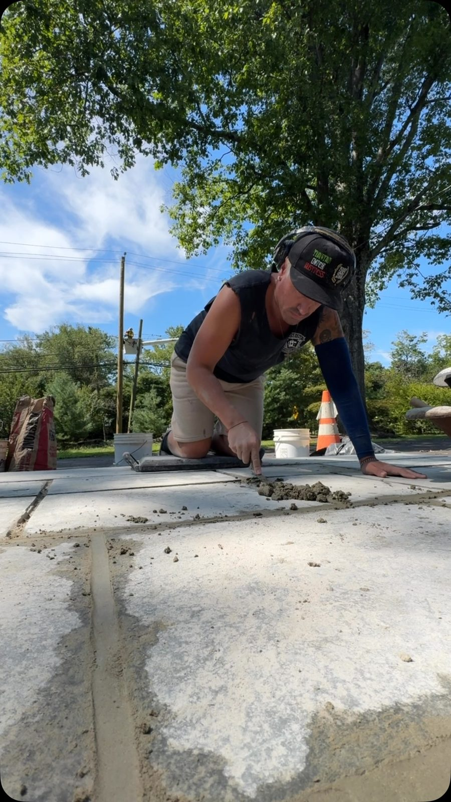
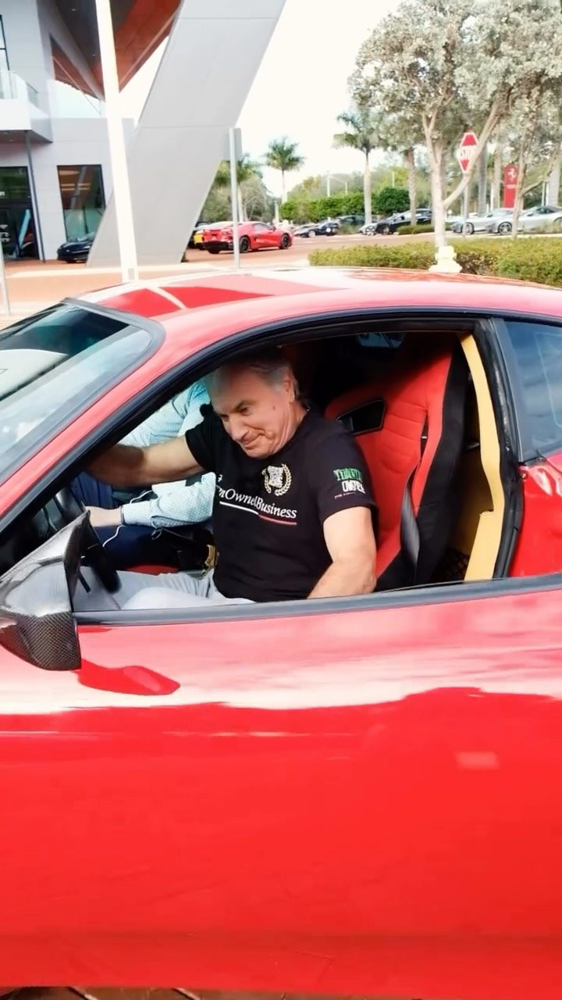
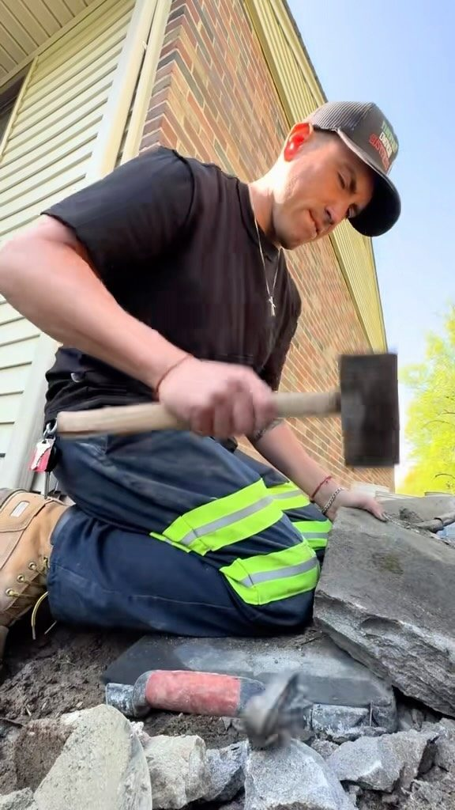

Our story
Famiglia. Muratura. Tradizione.
Family. Masonry. Traditions. Three words Luciano and Alex Sansalone live by, on the job site all week and at the Sunday table.
Chapter one · Italy
It started at fifteen.
In the Italian countryside, a boy of fifteen picked up a trowel beside his father, a second-generation mason, and his grandfather. There were no shortcuts to learn. Only stone, mortar, and the patience to place each piece where it belonged.
Luciano Sansalone learned the intricate artistry of masonry the way it had been taught for a century in his family: by hand, by eye, and by doing it again until it was right. That apprenticeship is still in every wall he builds.


Chapter two · America
Forty years in Bucks County.
Over forty years ago Luciano immigrated to the United States and founded his masonry company with one goal: to create stone structures that stop people in their tracks.
Bucks County, with its 18th- and 19th-century fieldstone farmhouses, turned out to be exactly the right place for an Italian mason. Long before social media, word of his craftsmanship spread from one property to the next by personal recommendation, earning a loyal clientele that valued his devotion to the craft. Houses, fireplaces, brick ovens, chimneys, ponds, patios, walkways, wine cellars and retaining walls followed, from Doylestown to Princeton to Philadelphia's Main Line.
Chapter three · The fourth generation
Alex picks up the trowel.
Alex Sansalone grew up on his father's job sites. Today he runs American Stone LS alongside Luciano as the fourth generation of Sansalone masons, and films the work so the next generation can see how it is really done.
“It's a dying art, but I'm proud to be a fourth-generation stone mason.”Alex Sansalone, on Instagram
When you hire American Stone LS, the people who walk your property, sketch the design and set the stone are the same two people. That is rare, and we intend to keep it that way.

Four generations
A craft handed down.
From a village in Italy to Furlong Road in Doylestown, the trade has moved through four sets of hands. Here is the short version.
Great-grandfather & grandfather
Stonemasons in the Italian countryside. The trade begins in the family, where walls, wells and houses were built from what came out of the ground.
Luciano's apprenticeship
Luciano begins working beside his father, a second-generation mason, and his grandfather. He learns to read a stone before he sets it.
A new country
Luciano immigrates to America and founds his own masonry company. Before the internet, his name travels by word of mouth through Bucks County.
Landmarks and living rooms
Historic farmhouse restorations, the Cannon Club at Princeton University, hundreds of fireplaces, walls, patios and pizza ovens across PA, NJ, NY and DE.
Luciano & Alex, side by side
Father and son run American Stone LS together. Alex carries the fourth generation forward and documents the craft for the world to see.
Sansalone Sundays
The tools go down, the pasta pot goes on. The traditions that shaped the family are shared every week with thousands of followers.
What we believe
What we believe.
Real stone
Pietra veraWe build with natural stone whenever we can, and when a client chooses veneer, we set it like it is real. No "lick 'em and stick 'em."
Foundation first
Prima le fondamentaConcrete footings cured for days. The difference between a project that lasts months and one that lasts generations.
Design together
Progettare insiemeFrom your first idea or from our portfolio, we design with you and agree on every detail before the first stone is set.
Family on site
La famiglia in cantiereLuciano and Alex are on your property, not a sales rep. We keep the site immaculate and treat your home like our own.
Sansalone Sundays
Sansalone Sundays.
Spaghetti alla Luciano. Pasta alla Calabrese with homemade meatballs. Ravioli with sausage and Swiss chard. Homemade wine with the cousins. And, once, a Ferrari. Follow along at @americanstonels.



Stonework is a form of art, and we strive to build a masterpiece.
Luciano Sansalone